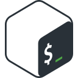

Lucas Gomes
Guimarães Areque
Qualidade de software e infraestrutura de TI, em Manaus.
No QA, analiso requisitos, escrevo cenários e casos de teste, automatizo testes E2E com Playwright e testes de API com Python e pytest, e coloco tudo para rodar no GitLab CI. Na infraestrutura, cuido de Active Directory, Windows Server, firewall e redes. Curso Engenharia da Computação na FAMETRO e estou aberto a vagas em QA, TI e desenvolvimento.
$ pytest perfil/ -v
test_e2e.py::test_47_cenarios_em_3_navegadores PASSED
test_api.py::test_valida_api_com_pytest PASSED
test_api.py::test_explora_api_com_postman_e_swagger PASSED
test_gestao.py::test_todo_teste_tem_caso_no_zephyr PASSED
test_gestao.py::test_registra_defeitos_no_mantis PASSED
test_ci.py::test_bloqueia_merge_request_com_falha PASSED
test_infra.py::test_administra_active_directory PASSED
test_infra.py::test_configura_firewall_e_ubiquiti PASSED
========== 8 passed in 0.42s ==========- No trabalho
-
- Playwright
 TypeScript
TypeScript Python
Python pytest
pytest Jest
Jest Vitest
Vitest- Testing Library
 Postman
Postman Swagger
Swagger- GitLab CI
 Docker
Docker Git
Git- Zephyr
- Mantis
 Linux
Linux Windows Server
Windows Server- Active Directory
- Ubiquiti
- Em cursos e estudos
-
 JavaScript
JavaScript C
C SQLite
SQLite MySQL
MySQL GitHub
GitHub
Bash
Experiência
-
até hoje em andamento
Voluntário QA
Laboratório de Manufatura Avançada, meio período
Automação de testes de um sistema web, cobrindo front-end, API e serviços.
- 47 cenários E2E com Playwright e TypeScript, executados em Chromium, Firefox e WebKit, com screenshot quando falham e trace nas novas tentativas.
- Testes de API em Python e pytest, organizados em 23 marcadores próprios e separados em funcionais e não funcionais.
- Rastreabilidade com o Zephyr pelos marcadores no código, com uma verificação automática que barra qualquer teste sem caso mapeado no catálogo.
- Catálogo de qualidade com casos de teste e bugs integrados ao Mantis, planos de teste e revisões de cobertura de requisitos.
- Testes unitários e de integração com Jest e ts-jest na API em NestJS, e com Vitest e Testing Library no front-end em React.
- Pipeline no GitLab CI que roda os testes em cada merge request, bloqueia a integração quando algo falha e guarda relatórios JUnit e evidências.
-
até hoje em andamento
Analista de Sistemas de TI
TIC do Norte, meio período
Suporte e infraestrutura de TI em ambiente corporativo, com foco em manter os serviços disponíveis e os usuários atendidos.
- Administração de usuários, grupos e políticas de acesso no Active Directory, da criação à desativação de contas.
- Suporte técnico N1 e N2, presencial e remoto, com registro, triagem e tratamento dos chamados até a solução.
- Administração e monitoramento de servidores Windows Server.
- Configuração de regras de firewall, políticas de segurança de rede e equipamentos Ubiquiti.
- Diagnóstico de problemas de conectividade em redes TCP/IP e ambientes Windows.
-
a
Estagiário de TI
Secretaria de Estado do Meio Ambiente (SEMA)
- Suporte técnico N1 e N2 em hardware, software e conectividade.
- Preparação, instalação e manutenção de estações de trabalho.
- Administração de usuários, grupos e permissões no Active Directory.
- Apoio à administração de servidores Windows e da infraestrutura de redes.
- Suporte à configuração e manutenção de equipamentos de rede e firewall.
-
a
Estagiário
Instituto de Proteção Ambiental do Amazonas (IPAAM)
Competências
- Automação de testes
- Playwright com TypeScript, pytest, Jest e ts-jest, Vitest, Testing Library
- Testes de API
- Python, pytest, Postman, Swagger
- Qualidade de software
- Análise de requisitos, cenários e casos de teste, testes E2E e cross-browser, testes funcionais e não funcionais, evidências
- Gestão e processos
- Zephyr, Mantis, rastreabilidade de requisitos, relatórios JUnit, Scrum e Kanban
- CI/CD e DevOps
- GitLab CI, Docker, Git, Linux CLI, shell script
- Banco de dados
- SQL, MySQL, SQLite
- Infraestrutura e redes
- Active Directory, firewall, Ubiquiti, redes TCP/IP, VLANs, Wi-Fi
- Sistemas operacionais
- Linux, Windows, Windows Server
Formação
Engenharia da Computação
FAMETRO, noturno, 6º período
Início em 2024, conclusão prevista para dezembro de 2028
Idiomas
Português, nativo
Inglês, básico
Cursos e certificados
Os cursos com link abrem o certificado na plataforma onde foi emitido.
Qualidade e equipes
- Quality Assurance: plano de testes e gestão de bugs Alura, abr 2026
- Fundamentos em teste de software TIC em Trilhas, jun 2026
- Equipes ágeis: organizando os papéis em uma equipe Alura, jun 2026
CI/CD e DevOps
- CI/CD e DevOps: implementar pipelines automatizados e seguros Alura, out 2026
- Docker: criando e gerenciando containers Alura, mai 2026
- DevOps: explorando conceitos, comandos e scripts no Linux CLI Alura, mai 2026
- Git e GitHub: compartilhando e colaborando em projetos Alura, mar 2026
- DevOps: trabalhando com tráfego seguro em comunicações web Alura
Redes
- Redes de Computadores Completo: do básico ao avançado Udemy, out 2025
- Redes Wi-Fi: criando uma rede sem fio de modo seguro Alura, abr 2026
- Redes: implementando roteamento, DNS e IPv6 Alura, abr 2026
- Redes: construindo um projeto com VLANs, políticas de acesso e conexão com internet Alura, mar 2026
- Redes: dos conceitos iniciais à criação de uma intranet Alura, fev 2026
- Redes e Protocolos: fundamentos da web Alura
Programação e dados
- SQLite online: conhecendo instruções SQL Alura, out 2026
- Python: crie a sua primeira aplicação Alura
- Lógica de programação: praticando com desafios Alura, abr 2026
- Lógica de programação: explore funções e listas Alura, abr 2026
- Lógica de programação: mergulhe em programação com JavaScript Alura, mar 2026
- C: avançando na linguagem Alura, abr 2026
- C: conhecendo a Linguagem das Linguagens Alura, abr 2026
- Começando em Programação: carreira e primeiros passos Alura, mar 2026
Sistemas e ferramentas
- Linux: gerenciando diretórios, arquivos, permissões e processos Alura, jan 2026
- Terminal: aprenda comandos para executar tarefas Alura, fev 2026
- Windows Prompt: utilizando o CMD Alura, fev 2026
- Excel Avançado Fundação Bradesco
- Word Avançado Fundação Bradesco